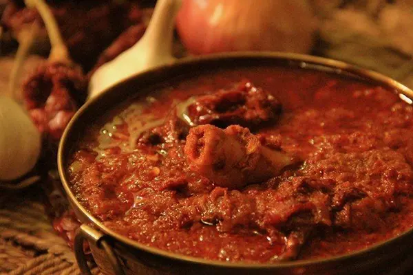
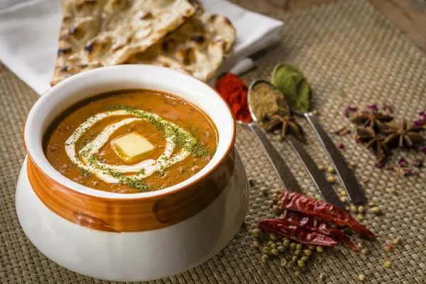
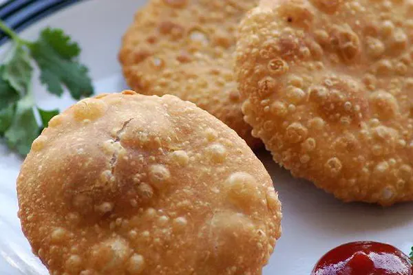
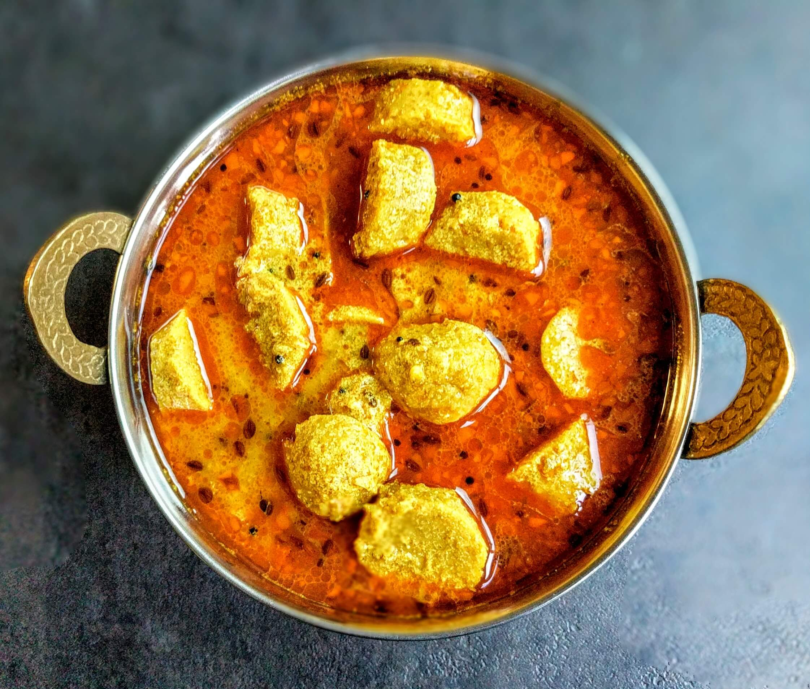
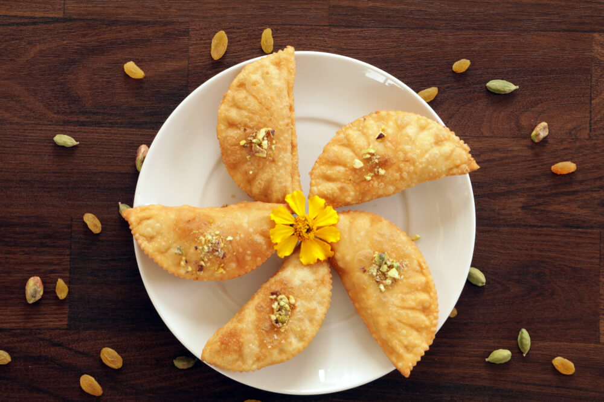

Rajasthani Thali
 Try out authentic Rajasthani food with tons of ghee (added for that authentic flavour) at Chokhi Dhani Village Resort. You will find daal (lentil curry), Bati (baked round bread topped with a dollop of ghee), Churma (dessert), Kheer & Sangri (fried version of dried veggie), Gatte ki sabzi (curry) and all typical Rajasthani dishes and the fun of food get doubled here with village ambience, the local artist performing folk dances, camel rides, and other entertaining activities. Thus all these fun ingredients form win-win situation for explorers with famous foods in Jaipur.
Try out authentic Rajasthani food with tons of ghee (added for that authentic flavour) at Chokhi Dhani Village Resort. You will find daal (lentil curry), Bati (baked round bread topped with a dollop of ghee), Churma (dessert), Kheer & Sangri (fried version of dried veggie), Gatte ki sabzi (curry) and all typical Rajasthani dishes and the fun of food get doubled here with village ambience, the local artist performing folk dances, camel rides, and other entertaining activities. Thus all these fun ingredients form win-win situation for explorers with famous foods in Jaipur.
Laal Maans

Check out hot non-vegetarian hub of Jaipur, Handi for the world tasted Rajasthani serving, Laal maans– a mutton curry cooked in yogurt and typical Rajasthani spices especially red chili resulting a die-hard spicy dish on your plate, but a must try out for its royal flavor. This tantalizing dish best goes with handkerchief thin Roomali Roties (Indian bread). Take this yum challenge to tempt your taste buds only in Jaipur.
Daal Baluchi

Another classy dine out choice in Jaipur, Baluchi is part of the hotel The Lalit and this place stands out in their specialty Daal Baluchi (a rich lentil curry) prepared with their treasure recipe. Don’t miss out this place for one special five start treat in colorful capital, Jaipur.
Pyaz Kachori

One of the most famous foods in Jaipur is Pyaz Kachori. One of the favorite snacks of Jaipur is Pyaz Kachori, a deep-fried whole wheat pastry stuffed with fried onions and other spices (not too healthy but who cares for health while having amazingly delicious kachoris) that too of Rawat Mishtan Bhandar, Jaipur’s world-famous Kachori spot. Full your mouth up with yum kachori bites this time in Jaipur.
Gatte ki Sabji

A delicious curry prepared with gram flour as the base ingredient. 'Gatte' means cooked gram flour dumplings, which are added to the spicy curd gravy to make it a mouthwatering cuisine.
Gujia

Gujia is specially made at the time of Holi festival. It is a hemispherical sweet pastry with rich fillings of nuts, dried fruit and mawa (dried milk).